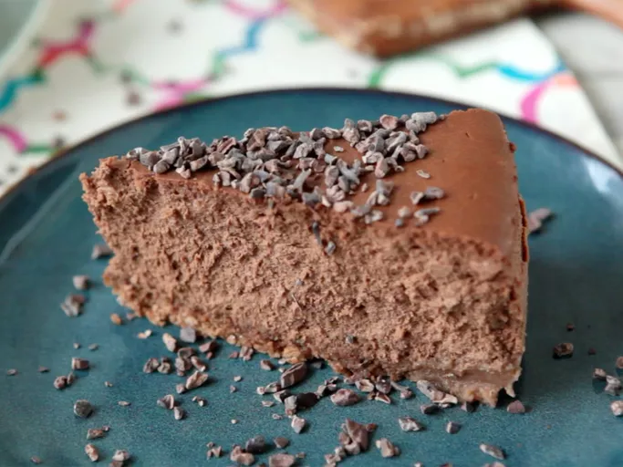

Guinness and Chocolate Cheesecake

Ingredient
- 3 (8 ounce) packages cream cheese, room temperature
- 1 cup white sugar
- 4 large eggs, room temperature
- 1 tablespoon vanilla extract
- 1 teaspoon cream of tartar
Directions
- Preheat the oven to 350 degrees F (175 degrees C).
- Make crust: Mix together graham crumbs, melted butter, and sugar in a medium bowl until evenly moistened. Press into the bottom and 1/2 inch up the sides of a 9-inch springform pan. Set aside.
- Make cheesecake: Mix together cream cheese and sugar in a large bowl with an electric mixer until smooth. Blend in eggs, vanilla, and cream of tartar. Pour over crust in the pan.
- Bake in the preheated oven until the center is set, about 50 minutes. Allow to cool on the counter for 5 minutes.
- While cheesecake is cooling, make topping: Mix together sour cream, sugar, and vanilla in a medium bowl until smooth.
- Pour topping over cheesecake, starting from the sides of the pan and working your way to the center.
- Return cheesecake to the oven until topping is set, about 5 minutes. Allow to cool in the pan to room temperature. Chill in the refrigerator for at least 6 hours before serving.